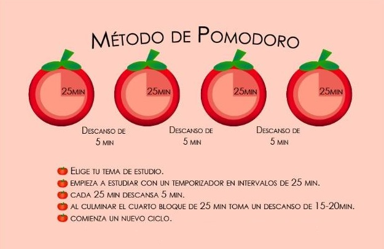

-
Guía de estudio
Esta guía para jóvenes con TDAH proporciona estrategias prácticas para organizar el tiempo, mejorar la concentración y manejar el estrés. Incluye técnicas de estudio efectivas adaptadas a sus necesidades.
-
Técnicas para organizar el tiempo

-
Mindfulness
El Trastorno por Déficit de Atención e Hiperactividad (TDAH) requiere de un tratamiento a largo plazo en el cual, las terapias de tipo cognitivo-conductual como el mindfulness ayudan a controlar y reducir los síntomas de la hiperactividad, y trabajar la atención.
El mindfulness es una práctica de relajación enfocada en ser conciente del aquí y ahora, que ayuda a gestionar y controlar las emociones, y contrarrestar los comportamientos negativos del TDAH.
Conoce algunos de sus beneficios:- 1- Mejorar la atención y la memoria.
- 2- Mejorar el autocontrol, la autorregulación de los pensamientos y la identificación de los sentimientos.
- 3- Mejora el equilibrio emocional, disminuyendo la ansiedad, el estrés y el nerviosismo.
- 4- Mejorar el control de las emociones, reduciendo las respuestas impulsivas.
- 5- Mejorar la capacidad de reflexión y el conocimiento de uno mismo, permitiendo nuevas respuestas ante problemas y como actuar ante una crisis. Esto favorecería una actitud comprensible de ambas partes frente a determinadas situaciones que puedan desarrollarse en el día a día.
-
Videos educativos
1. TDAH o Trastorno de Déficit de Atención e Hiperactividad (Causas, Diagnóstico y Tratamiento)
2. Tu cerebro cuando tienes TDAH
3. El déficit de atención (TDAH) en la escuela | Leonardo Bronstein | TEDxCordoba
4. Una historia del Trastorno por Déficit de Atención e Hiperactividad (TDAH) en adultos